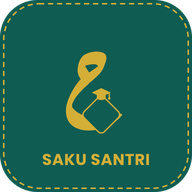
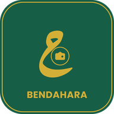

Sistem Keuangan Berbasis Digital
Pondok Pesantren An-Nur
Malangbong, Garut
Silakan pilih salah satu di bawah ini sesuai peran Anda.
Pilih Aplikasi

Saku Santri
Untuk orang tua dan pengurus asrama. Cek saldo dan riwayat keuangan santri.
Masuk sebagai Orang Tua & Pengurus

Bendahara
Untuk pengurus keuangan pesantren. Kelola transaksi dan laporan kas.
Masuk sebagai Bendahara
🔒 Data keuangan tersimpan aman & hanya bisa diakses oleh pihak berwenang